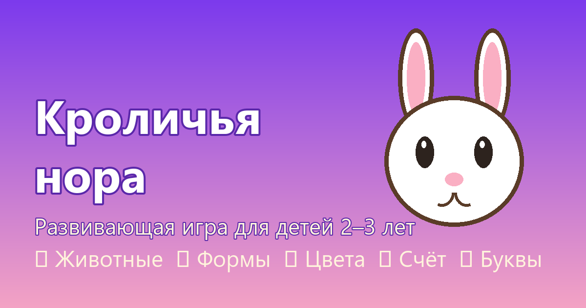

Развивающая игра для малышей 2–3 лет
▶ Играть прямо сейчасРаботает на телефоне, планшете и компьютере.
Ничего устанавливать не нужно — просто откройте игру по ссылке.

Узнавать животных и их настоящие звуки — записи, а не синтез.
Найти маму для малыша — первые простые пары и логика.
Круг, квадрат, треугольник, звезда, сердце и прямоугольник.
Различать шесть основных цветов по ярким шарикам.
Счёт от 1 до 5: «нажал раз, два, три… всего три!»
Буквы русского и английского алфавита с картинками-примерами.
Вставить фигурку в своё окошко — тапом или перетаскиванием.
Прислушаться и угадать животное по звуку.
Игра рассчитана на 2–3 года, но многие малыши начинают играть раньше: начните с игр «Животные» и «Цвета» — там всего два варианта ответа и всё сделано под пальчик.
Откройте игру в браузере, в меню браузера выберите «Добавить на главный экран» (iPhone) или «Установить приложение» (Android). После этого игра открывается без браузера и полностью работает офлайн.
Записанные голосовые фразы и звуки животных играют всегда. Системный диктор нужен только для динамических подсказок: проверьте, что в настройках телефона установлен русский пакет голосов (например, «Google Текстовые речевые сервисы»).
Для 2–3 лет рекомендуют 10–15 минут за раз. В настройках родительского раздела есть таймер перерывов — включите 15 минут, и игра сама предложит отдохнуть.